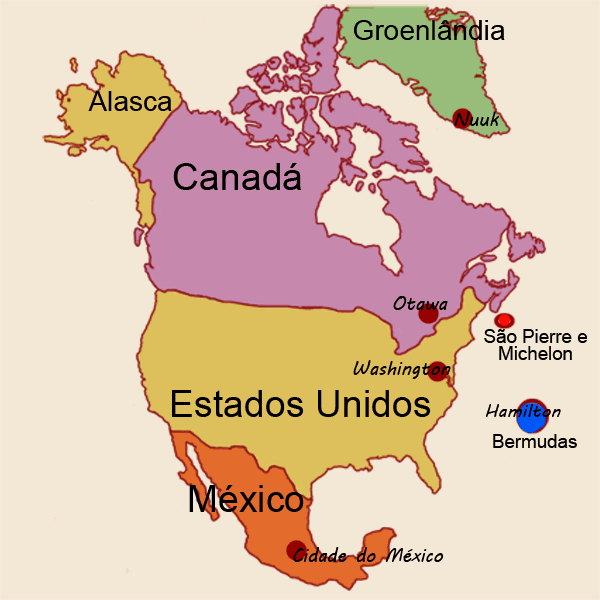
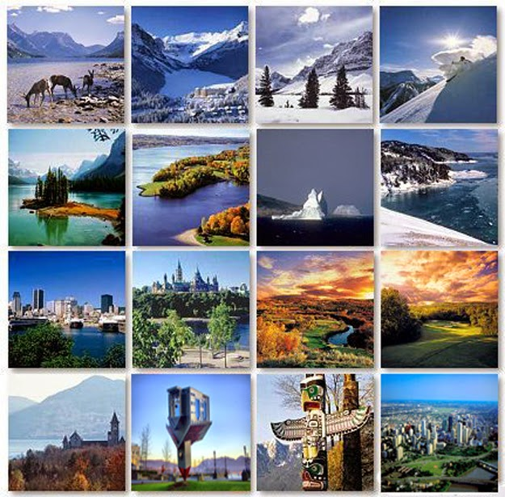

América do Norte |
|
Na região norte pertencente ao Canadá existe um grande número de ilhas e a maior ilha do mundo, a Groenlândia que pertence à Dinamarca (país da Europa). Outras ilhas que fazem parte do continente americano, mas pertencem a outros países são as Bermudas (Reino Unido) e o território ultramarino de Saint Pierre et Miquelon (francês). O Havaí, que fica no Oceano Pacífico pertence aos EUA. Comumente, usa-se a expressão ”norte-americano” para se designar os cidadãos apenas dos EUA, aplicando-se o gentílico “canadense” ou “canadiano” aos habitantes do Canadá, e “mexicano” aos do México. Como peculiaridade o território norte-americano apresenta uma divisão bastante simétrica entre os seus Estados. |

